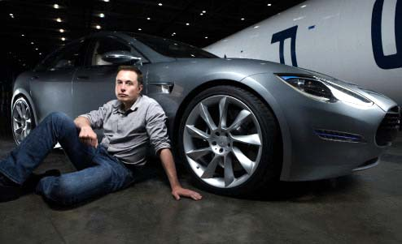
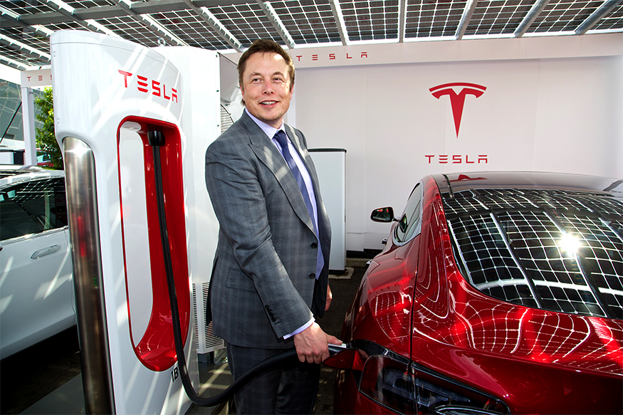
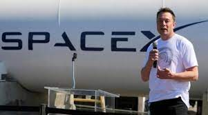
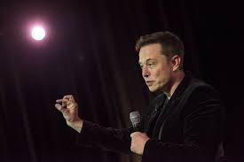
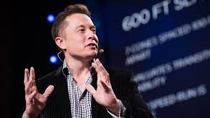
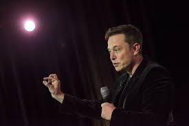
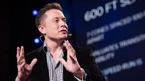

The only man who managed to build

CEO Tesla, SpaceX
The only man who managed to build
His photo gallery
   



BORN
Born on 28th June 1971 in South Africa. Elon Reeve Musk (born June 28, 1971) is a South African-born, Canadian-American business magnate, engineer, inventor and investor.
Blastar video game
Blastar was a game written by Elon Musk in 1984 (at the age of 12). The source code was published in a magazine and he received $500 for it.
University of Pennsylvania
In 1995 Elon Musk received his Bachelor in Physics and Economics from the University of Pennsylvania.
Marriage Justine Musk
Elon marries Justine in 2000 but separated in 2008, after having six sons.
eBay buys PayPal
PayPal was acquired by eBay for US$1.5 billion in stock, of which US$165 million was given to Musk.
Space X
With US$100 million of his early fortune, Musk founded Space Exploration Technologies
Investment Tesla Motors
Musk led the Series A round of investment in February 2004, joining Tesla's Board of Directors as its Chairman.
Solar City
Musk provided the initial concept, and financial capital for SolarCity, co-founded by his cousins Lyndon and Peter Rive
Falcon 9
Musk and President Barack Obama at the Falcon 9 launch site in 2010
Tesla Model S
Tesla began delivery of its four-door Model S
DOGE
While Bitcoin is declining, Elon Musk keeps on tweeting about Dogecoin and pushes the prices up.
Elon Musk offers to buy Twitter
After becoming shareholder of Twitter, Elon Musk takes a next step and offers to buy 100% of Twitter Inc. The board of Twitter is still deciding whether to accept his offer. The price of Twitter stock grew with 18% after the announcement was made.
Elon Musk buys Twitter for $43B
Elon Musk receives approval from the shareholders of Twitter to buy the rest of all the shares of Twitter for $43 billon dollars. Elon Musk believes the platform has much more potential and expect to grow the platform in the coming years
Elon Musk official owner Twitter
After months of rumors and negations with Twitter, on Friday 28th of October Elon Musk official buys Twitter. Elon Musk kept saying that Twitter was not clear in providing data on the amount of bots on the platform. But after several talks with the board he finally received the data. Now that Elon Musk is the owner of Twitter he plans to transform the platform to an X application, meaning it will start adding new features. What does will be is still unclear.